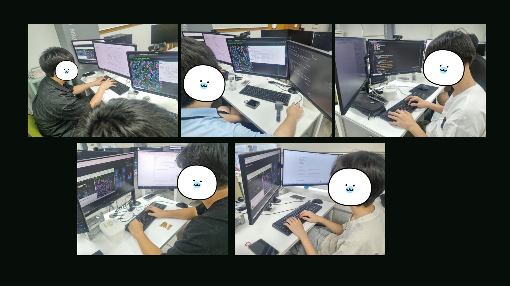

La era del vibe coding con IA:
el rol docente y el diseño de la enseñanza-aprendizaje
AI를 활용한 바이브코딩 시대, 교사의 역할과 교수학습설계
Los estudiantes atacan con IA la plataforma de clase creada por el profesor, y el profesor se defiende: un caso de clase de ciberataque y ciberdefensa 학생들은 선생님이 만든 수업 플랫폼을 AI로 공략하고, 선생님은 그런 학생들을 방어하는 사이버 공방전 수업 사례
Diseño de la clase수업 설계
Diseño de la clase수업 설계
La clase que planeé al principio초기에 기획했던 수업
- Que los estudiantes crearan programas de automatización con vibe coding 바이브 코딩을 이용해서 학생들이 자동화 프로그램 만들도록 하는 것
- Algo sencillo: programas que mueven el mouse o manejan un sitio web automáticamente 마우스를 대신 움직여주거나, 웹사이트 자동으로 조작해주는 프로그램을 만드는 정도
- A la IA: [ Voy a dar esta clase; créame un sitio web adecuado ] AI에게 [ 이런 수업을 할 꺼니까 적당한 사이트 만들어줘 ]
Diseño de la clase수업 설계
Booking 1000 Seats Competition
- Al hacer clic en un asiento libre, aparece un cuadro para escribir el nombre빈 좌석을 클릭하면 이름 입력창이 뜬다
- Al escribir el nombre, ese asiento queda reservado이름을 입력하면 그 자리가 예매된다
- Competencia en tiempo real: la tabla de clasificación muestra quién reservó más누가 가장 많이 예매했는지 리더보드로 실시간 경쟁
- “IA, créalo”: hecho en un instante con vibe codingAI야 만들어줘, 바이브코딩 딸깍으로 제작
- macro-classroom.shk-8b6.workers.dev
BOOKING 1000 SEATS
Diseño de la clase수업 설계
Cómo se desarrolló la clase Booking 1000 Seats CompetitionBooking 1000 Seats Competition 수업 진행
Mostré a los estudiantes un programa de automatización en Python que había preparado 미리 준비해 놓은 파이썬 자동화 프로그램을 학생들에게 공개
“Ahora enséñenle esto a la IA y hagan que cree un programa de automatización más rápido” 자 이제 너희들이 이걸 AI에게 학습시켜서 알아서 빠른 자동화 프로그램을 만들어보거라
“Luego competiremos para ver quién reserva más y más rápido” 이따가 누가 더 예매 빠르게 많이 하는지 시합해보자
Al principio초반 풍경
Al principio todo salió como esperaba초반에는 의도대로 흘러감
Al principio hubo muchos errores típicos de estudiantes초반에는 학생들이 할만한 실수들이 많이 나왔음
Tiempo de espera demasiado corto너무 짧은 대기시간
La reserva fallaba sin tiempo ni para escribir el nombre이름을 입력할 시간도 없이 예매 실패
Clic en el lugar equivocado엉뚱한 곳 클릭
Hacían clic donde no había asiento libre y fallaban una y otra vez빈 좌석이 아닌 곳을 눌러 계속 실패
100 navegadores a la vez브라우저 100개 동시 실행
Abrirlos era automático; cerrarlos, a mano todo el día여는 건 자동, 닫는 건 하루 종일 수동
Comienza la batalla공방전 시작
Estudiantes que empiezan a buscar otros caminos슬슬 다른 방법을 찾는 학생들
En cierto momento, la reserva empezaba aunque yo había pulsado STOP어느 순간부터 STOP을 눌렀는데 예매가 시작
Yo había bloqueado la reserva, pero apareció un estudiante que la rompía y la forzaba a empezar분명 예매를 잠가놨는데, 그걸 뚫고 강제로 예매를 시작하는 학생 등장
Sobrescriben el asiento de otro남의 좌석을 덮어쓴다
Ponían su propio nombre en un asiento que otro estudiante ya había reservado이미 다른 학생이 예매한 자리를 자신의 이름으로 덮어써 버림
Los estudiantes empezaron a analizar con IA las vulnerabilidades del sitio학생들이 AI로 사이트의 취약점을 분석하기 시작
Profe:¿Qué es esto? ¿Cómo lo hicieron?정보쌤 : 이거 뭐냐, 이거 어떻게 했냐?
Estudiantes:¡Hackeamos su sitio, profe!학생들 : 선생님 사이트 해킹했다
Comienza la batalla공방전 시작
Ronda 1 · Causa1라운드 · 원인
Causa: sitio hecho en un instante con IA y sin revisar원인 : 사이트 제작을 AI 딸깍으로 만들고 검토 X
Los datos de conexión a la base de datos (API, URL) quedaron expuestos데이터베이스 접속 정보(API, URL)이 그대로 노출
Herramientas de desarrollo (F12)F12 개발자 도구
Las solicitudes se ven tal cual en la pestaña Red네트워크 탭에 요청이 그대로
Datos de conexión expuestos데이터베이스 접속 정보 노출
La configuración de Firebase está tal cual en el códigoFirebase 설정이 코드에 그대로
Reglas de acceso abiertas데이터베이스 접근 규칙 개방상태
Cualquiera puede leer y escribir누구나 읽고 쓸 수 있는 상태
Acceso directo a la BDDB 직접 접근
El estudiante escribe directamente en la BD학생이 DB에 곧장 기록
Aunque los datos de conexión estaban expuestos, no pensé que estudiantes de secundaria pudieran aprovecharlos 데이터베이스 접속 정보가 노출되어 있더라도, 중학생들이 이걸 이용할 수 있을 거라고 생각하지 못함
Ellos también usan IA, y subestimé su capacidad 학생들도 마찬가지로 AI를 돌리고 있는데, 능력을 과소평가
Ronda 1 · Defensa1라운드 · 방어
Primera defensa: poner dos puertas1차 방어 - 문을 두 개 달다
Prompt a la IAAI 프롬프트
Defiéndeme de los estudiantes que cambian todo a su antojo aunque pulsé STOP.STOP 눌렀는데도 마음대로 바꾸는 학생들을 방어해줘.
Haz que solo los usuarios con sesión iniciada y verificada puedan escribir datos.로그인이 확인된 사용자만 데이터를 쓸 수 있도록 바꾸세요.
Prompt a la IAAI 프롬프트
Defiéndeme del estudiante que sobrescribe los asientos que otros ya reservaron.다른 학생이 예매한 자리를 덮어쓰는 학생을 방어해줘.
Guarda solo después de comprobar que la reserva empezó y que el asiento no lo reservó otra persona.예매가 시작됐는지, 이미 다른 사람이 예매한 자리는 아닌지 확인후 저장하세요.
Profe:Chicos, inténtenlo otra vez. Ya lo bloqueé todo. Sus métodos ya no van a funcionar, ¿eh? 얘들아 다시 해보렴. 내가 다 막아놨다. 이젠 너네가 했던 방법 안먹힐걸?
Estudiantes:Pues sí funciona, jaja 되는데요 ㅋㅋ
Creí que la defensa había funcionado, pero los estudiantes seguían empezando la reserva a su antojo y sobrescribiendo los asientos de otros… 방어에 성공한 줄 알았으나, 학생들은 여전히 마음대로 예매를 시작하고 다른 사람이 예매한 자리를 덮어쓰기중…
Hice exactamente lo que me dijo la IA… ¿por qué no funcionó la defensa? 분명 AI가 알려주는데로 했는데 왜 방어가 안된걸까?
Ronda 2 · Causa2라운드 · 원인
En realidad, la solución que me dio la IA tenía huecos사실 아까 AI에게 받은 해결책에는 허점이 존재
[ Haz que solo los usuarios con sesión verificada puedan escribir datos. ] Hueco [ 로그인이 확인된 사용자만 데이터를 쓸 수 있도록 바꾸세요. ] 허점
Creando una cuenta nueva y enviando solicitudes con ella, pasaban sin problema, porque registrarse todavía no estaba bloqueado 새 계정을 만들어서 그 계정으로 요청하면 그대로 통과 — 새로 가입하는 것 자체는 아직 막혀 있지 않았기 때문
[ Guarda solo después de comprobar que la reserva empezó y que el asiento no lo reservó otra persona. ] Hueco [ 예매가 시작됐는지, 이미 다른 사람이 예매한 자리는 아닌지 확인후 저장하세요. ] 허점
Se dejó el camino original y solo se añadió uno nuevo que pasa por el servidor intermedio. Sin pasar por el servidor, por el camino original, se entraba igual 원래 있던 길은 그대로 두고, 검사하는 중간 서버로 가는 새 길만 하나 추가 — 중간 서버를 안 거치고 원래 길로 가면 그냥 통과
Ronda 2 · Defensa2라운드 · 방어
Segunda defensa: reducir todo a un solo camino2차 방어 : 경로를 하나로 좁히다
Prompt a la IAAI 프롬프트
Lo hice como me dijiste y todavía no logro defenderme. Esta es mi situación: dime otras formas de defenderme.너가 알려준 방법으로 했더니 아직 방어가 안되는데, 지금 내 상황이 이러한데 추가적인 방어 방법 알려줘.
Bloquea por completo los registros nuevos en la BD y haz que el único camino a los datos sea el servidor intermedio.DB 신규 가입을 완전 차단하고, 데이터에 접근하는 길을 중간서버 하나만 지나가게 하세요.
Profe:Chicos, con este parche la seguridad del sitio subió. Ahora sí que no va a funcionar. 얘들아 지금 패치를 통해서 사이트의 보안수준이 올라갔다, 이제는 안통할 것이다.
¡Uy! De verdad ya no funciona.어! 진짜 안되네요.
Tendremos que buscar otra forma.다른 방법을 찾아야겠다.
Defensa exitosa contra cambiar a su antojo el inicio de la reserva y sobrescribir las reservas de otros 예매 시작을 마음대로 바꾸는 기법과 다른 학생의 예매를 덮어쓰는 기법에 대한 방어 성공
Pero poco después surgió otro problema하지만 잠시 뒤 또 다른 문제발생
Ronda 3 · Ataque3라운드 · 공략
Ronda 3: los estudiantes reservan demasiado rápido…3라운드 학생들의 예매 속도가 너무나도 빠르다…
En cuanto empezaba la reserva, los 1000 asientos se agotaban en pocos segundos예매 시작과 동시에 1천개의 좌석이 몇 초 만에 순식간에 예매되는 문제 발생
Profe:¿Cómo reservas todo a la vez? (de verdad no sabía cómo)정보쌤 : 너 이거 어떻게 한번에 동시에 예매하냐? (진짜 방법 모름)
Estudiante:Usé multihilos (multithreading)학생 : 멀티쓰레드 썼는데요
Profe:¿Y tú sabes hacer eso?정보쌤 : 너 그런 것도 할 줄 아니?
Estudiante:Sí, me lo explica la IA학생 : 네, AI가 알려주는데요
Ronda 3 · Ataque3라운드 · 공략
El método de los estudiantes: enviar la solicitud [reservar asiento] al servidor intermedio lo más rápido posible, una y otra vez 학생들의 공략법 : 중간서버에 [좌석예매] 요청을 최대한 빠르게 계속 반복
Solicitudes masivas y simultáneas al servidor intermedio con multihilos en Python Python 멀티스레드로 중간서버에 동시다발 요청
Aumenté los asientos de 1000 a 5000, pero igual se agotaban en segundos: aumentar los asientos no sirve de nada 좌석수를 1천개에서 5천개로 늘려보았으나 몇 초만에 예매되는건 동일 — 좌석수를 늘려도 의미가 없다
Estudiante A:Esto no es nada. El primer lugar es mío.학생 A : 이거 별거 없네, 내가 일등 확정이다
Profe:Parece que sí, vas a ganar tú정보쌤 : 그러네 너가 일등하겠다
Pensé que no habría un método más rápido que este이 방법 보다는 빠른 방법은 없을 것이라 생각
Estudiante B:Profe, yo soy más rápido학생B : 선생님, 제가 더 빠릅니다
Apareció un estudiante aún más rápido que el que usaba multihilos en Python파이썬 멀티쓰레드를 쓰는 학생보다 더 빠른 속도의 학생 등장
Profe:¡Vaya, de verdad eres más rápido! ¿Cómo lo hiciste?정보쌤 : 와 진짜 너가 더 빠르네. 어떻게 했냐?
Estudiante B:Los que usan Python tienen un retraso al empezar la reserva: el programa tarda en arrancar. Pero si envías las solicitudes con JavaScript directamente desde la consola del navegador, ese retraso es menor. 학생 B : 파이썬 쓰는 친구들은 처음에 예매 시작할 때 프로그램 켜지고 프로그램이 켜질때까지 딜레이가 있습니다. 하지만 브라우저 콘솔에서 바로 자바스크립트로 요청하면 이러한 딜레이가 적죠.
Profe:¡Vaya! ¿Y cómo lo supiste?정보쌤 : 와 그걸 어떻게 알았냐?
Estudiante B:Le pregunté a la IA si había una forma más rápida que la de mi compañero, y me la explicó. 학생B : 옆에 친구보다 더 빠른 방법이 있겠냐고 AI에게 물어보니 알려주더라고요
Un estudiante que, sin darse cuenta, vivió de forma indirecta la importancia del arranque en frío (cold start) 자신도 모르게 콜드 스타트 중요성을 간접적으로 체험한 학생
La clase que yo imaginaba era de programación de automatización en Python… y, sin darme cuenta, estoy en una ciberbatalla con mis estudiantes 내가 생각했던 수업은 파이썬 자동화 프로그래밍 수업인데 어쩌다 보니 학생들과 사이버 공방전을 하고 있네
Por cierto, íbamos a competir en reservas, pero unos pocos estudiantes acaparan todo y no hay competencia 그나저나 학생들과 예매 시합을 하기로 했는데 몇몇 학생들이 예매를 독점해버리니 경쟁이 안되네
¿Habrá alguna forma de impedir que los estudiantes que atacan el sitio acaparen las reservas? 이 사이트를 공략하는 학생들의 예매 독점을 막을 있는 방법이 있을까?
IA:Limita el número de solicitudes que una IP puede enviar por segundo AI : 한 IP에서 1초에 보낼 수 있는 요청 횟수를 제한하세요
Ronda 3 · Defensa3라운드 · 방어
Tercera defensa: limitar la velocidad de las solicitudes3차 방어 : 요청 속도를 제한하다
Cloudflare KV Rate Limit
Máximo de 100 solicitudes por segundo por IP한 IP의 초당 요청 횟수를 100회로 제한
Ahora sí podremos competir de verdad이제야 진짜 시합을 할 수 있겠군
Ahora, ni con multihilos en Python ni con JS desde la consola del navegador podrán enviar mil solicitudes de golpe. 이제 파이썬 멀티쓰레드든, 브라우저 콘솔에서 JS로 요청하든 한번에 천개씩 요청하는건 안될 것이다.
¿¡Eh!? De verdad no funciona. Tendremos que buscar otra forma de atacar.어!? 진짜 안되네. 다른 방법을 공략해야겠다.
¿Empezamos la competencia?이제 시합을 해볼까?
Profe, pero desde hace rato la función de reserva del sitio no funciona.선생님 그런데 아까부터 사이트에서 예매 기능 자체가 작동을 안합니다.
Tras la tercera defensa, de repente la función de reserva del sitio empezó a fallar 3차 방어 이후 갑자기 사이트에서 예매 기능에서 오류 발생
Desenlace결말
El límite de la tercera defensa: el plan gratuito tenía un tope diario3차 방어의 한계 : 무료플랜에는 일일한도가 있었다.
Lo que aprendí느낀점
Reflexión되짚어보기
Conocimientos que los estudiantes descubrieron explorando por sí mismos학생들이 스스로 탐구하면서 알아낸 지식들
Descubrir vulnerabilidades de un sitio web웹 사이트의 취약점 발견
Acceso a la base de datosDB에 접근
Condición de carrera (Race Condition)Race Condition
Eludir la autenticación인증 우회
Multihilos (multithreading)멀티쓰레딩
Usar JS en la consola del navegador브라우저 콘솔에서 JS 사용
Nada de esto se lo enseñó el profesor: todo lo descubrieron ellos mismos conversando con la IA 이 중에서 선생님이 알려준 것은 하나도 없다 — 전부 AI와의 대화에서 스스로 발견
Sentido educativo교육적 의미
La autoeficacia que generó la batalla공방전이 만든 자기효능감
El orgullo de haber vencido el sitio que creó el profesor선생님이 만든 사이트를 자신이 공략했다는 성취감
Las ganas de superar el reto cuando bloqueaban su método자신의 사용한 공략법이 방어되었을 때 도전욕구
Si un método no funcionaba, no se rendían y buscaban otro공략법이 통하지 않으면 포기하지 않고 다른 방법 탐구
Una experiencia divertida tanto para los estudiantes que atacaban como para el profesor que defendía공략하는 학생들도, 방어하는 선생님도 재밌던 경험
En las áreas tecnológicas, aprender junto con la IA produjo un aprendizaje muy potente기술관련 분야에서 AI와 함께 학습 했을 때 강력한 학습효과 발생
- Incluso estudiantes con poca programación o conocimientos técnicos analizaron la estructura del sistema preguntándole a la IA 코딩이나 전문적 지식이 부족한 학생도 AI에게 질문하며 시스템 구조를 분석
- Investigaron distintos métodos preguntándole a la IA: “¿Cómo puedo hacerlo más rápido?” 어떻게 하면 더 빠르게 할 수 있어? 라고 AI에 질문하며 다양한 방법 조사
- Con la IA, incluso estudiantes de secundaria logran un nivel de acceso avanzado AI와 함께라면 중학생들도 높은 수준의 접근 가능
El poder de la motivación: el orgullo de “lo logré yo”동기의 힘 : 내가 해냈다는 성취감
- Los estudiantes mostraron mucha más concentración y creatividad que de costumbre 학생들이 평소보다 훨씬 높은 집중력과 창의력을 발휘
- Aunque fallaran, no se rendían y buscaban otros caminos por sí mismos 실패해도 포기하지 않고 다른 방법을 스스로 탐색
- El orgullo de encontrar una vulnerabilidad y superarla → una fuerte motivación para aprender 내가 취약점을 발견해서 공략했다는 성취감 → 강력한 학습 동기로 연결
“En una clase con IA, hay que diseñar la enseñanza para que los estudiantes exploren libremente con la IA y sientan logro en ese proceso” “AI를 활용한 수업에서는 학생들이 AI를 활용해서 자유롭게 탐구할 수 있도록 하고 그 과정에서 성취감을 느낄 수 있는 교수학습과정 설계가 필요하다”
El rol del docente en la era de la IAAI 시대, 교사의 역할
- En las áreas tecnológicas, y sobre todo en el vibe coding, con IA los resultados de los estudiantes superan lo esperado 기술 관련 분야, 특히 바이브 코딩 분야에서 AI를 활용하면 학생들의 성과가 기대이상
- La motivación influye más en el aprendizaje que las diferencias de conocimientos previos 기존에 얼마나 알고 있었나 같은 배경 지식의 차이보다 동기부여가 학습에 미치는 효과가 더 강력함
- Hace falta un “patio de juegos” de aprendizaje donde el estudiante encuentre y resuelva problemas por sí mismo y siga retándose 학생 스스로 문제를 찾고 해결하게 만들고 계속 도전할 수 있는 교수학습 운동장 필요
- En esta época en la que todos usan IA y hacen vibe coding, el rol del docente no es solo transmitir conocimientos: es importante diseñar un patio de juegos de aprendizaje donde los estudiantes exploren, apliquen la tecnología y se reten libremente 모두가 AI를 활용하고 바이브코딩을 하는 지금 시대에서 교사의 역할은 지식 전달 뿐만 아니라 학생들이 자유롭게 기술을 탐구하고 적용하며, 도전할 수 있는 교수학습설계 운동장을 설계 하는 것이 중요
Reflexión con 읽걷쓰AI (Leer · Caminar · Escribir con IA) · Estructura H-A-H읽걷쓰AI로 되짚어보기 · H-A-H 구조
Ronda 1 · Acceso directo a la BD1라운드 · DB 직접 접근
H Buscando cómo reservar más rápido, los estudiantes se hacen preguntas →A Encuentran cómo acceder directamente a la BD →H Comprueban que de verdad funciona H 더 빠른 예매를 위해 방법을 찾던 학생들이 고민 → A DB 직접 접근하는 방법을 찾음 → H 실제로 통함을 검증
↳ Respuesta del profesor: reforzar las reglas de la BD + añadir un servidor intermedio교사의 대응 : DB 규칙 강화 + 중간서버 도입
Ronda 2 · Eludir la autenticación2라운드 · 인증 우회
H Piensan por dónde esquivar el servidor intermedio →A Eluden la autenticación con una cuenta nueva, sin pasar por el servidor →H Comprueban que el atajo funciona H 중간서버를 우회 지점을 고민 → A 새 계정으로 인증 우회, 중간서버 미경유 → H 이 우회가 실제로 통함을 검증
↳ Respuesta del profesor: bloquear los registros nuevos + un único camino de acceso por el servidor intermedio교사의 대응 : 신규 가입 차단 + 접근 경로를 중간서버 하나로 제한
Ronda 3 · Carrera de velocidad3라운드 · 속도 경쟁
H Buscan un método más rápido →A De multihilos en Python a solicitudes JS desde la consola del navegador →H Comprueban que este es el más rápido H 더 빠른 방법을 탐색 → A 파이썬 멀티스레드로부터 브라우저 콘솔 JS 요청까지 → H 이 방법이 가장 빠름을 검증
↳ Respuesta del profesor: límite de solicitudes por segundo por IP → los estudiantes siguen intentando esquivarlo → al final agotan el tope diario del plan gratuito y el límite se desactiva 교사의 대응 : IP당 초당 요청 제한 → 학생들, 계속 우회 시도 → 결국 무료플랜 일일 한도에 도달시켜 제한을 풀어버림
→ Resumen: en las tres rondas, los estudiantes recorrieron por sí mismos el ciclo pregunta (H) → ejecución con IA (A) → verificación (H), y cada resultado provocó una nueva H: la siguiente defensa del profesor. Toda la batalla se convirtió en un gran ciclo H-A-H. 정리 — 세 라운드 모두 학생은 질문(H) → AI와 실행(A) → 검증(H)의 루프를 스스로 돌았고, 그 결과가 선생님의 다음 방어라는 새로운 H를 부르며 전체 공방전이 하나의 큰 H-A-H 순환으로 이어졌다.
Reflexión con 읽걷쓰AI · Contexto de aprendizaje 4P읽걷쓰AI로 되짚어보기 · 4P 학습 맥락
P1 · Phenomenon: observar el fenómeno현상 관찰하기
Los estudiantes vivieron y observaron directamente cómo los asientos se agotaban al instante, cómo unos pocos acaparaban las reservas y cómo el profesor ponía una nueva defensa cada vez que ellos encontraban un método. 좌석이 순식간에 매진되고 몇몇 학생이 예매를 독점하는 현상, 그리고 방법을 찾을 때마다 선생님이 새로운 방어를 거는 상황을 학생들이 직접 겪으며 관찰
P2 · Problem: plantear preguntas문제 질문하기
“¿Cómo consigo más asientos?”, “¿Cómo supero esta defensa?”: con cada ronda (acceso a la BD, eludir la autenticación, carrera de velocidad) se hacían nuevas preguntas. "어떻게 하면 더 많은 좌석을 차지할 수 있을까?", "이 방어를 어떻게 뚫을 수 있을까?" — DB 접근, 인증 우회, 속도 경쟁까지 라운드가 바뀔 때마다 스스로에게 새로운 질문
P3 · Project: explorar la tarea과업 탐구하기
Modificar la BD directamente → eludir la autenticación con una cuenta nueva → solicitudes masivas con multihilos → solicitudes directas desde la consola: exploraron varios métodos con la IA y comprobaron uno a uno si funcionaban. DB 직접 수정 → 새 계정으로 인증 우회 → 멀티스레드 대량 요청 → 브라우저 콘솔 직접 요청까지, 여러 방법을 AI와 함께 탐구하며 하나씩 직접 실행해 실제로 통하는지 검증
P4 · Practice: pasar a la acción실천 행동하기
Cuando los bloqueaban, no se rendían y probaban otros atajos; insistieron hasta el punto de agotar el tope diario de la función de límite de solicitudes, y esa experiencia se convirtió en orgullo y en ganas del siguiente reto. 막히면 포기하지 않고 계속 다른 우회법을 시도했고, 결국 요청 제한 기능이 일일 한도에 도달해 풀려버릴 만큼 끝까지 밀어붙인 경험이 성취감과 다음 도전으로 이어짐
En clase수업 현장
